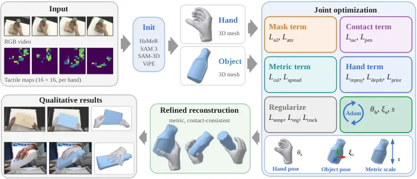
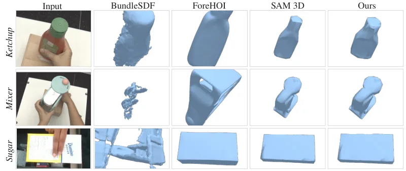
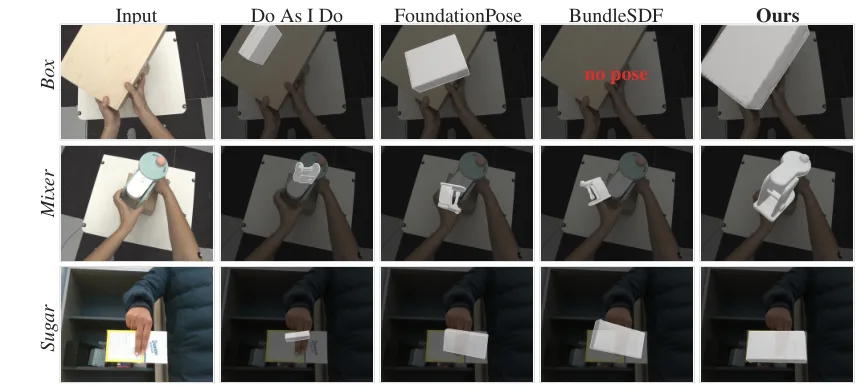
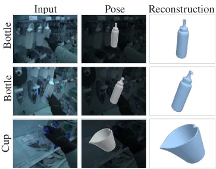

TacHOI：用触觉接触给单目手–物重建补上米制尺度
TacHOI: Contact-Aware Object Reconstruction and Tracking for Egocentric Videos
一句话：单目看不出物体有多大多远，那就让「手摸到哪、两只手指隔多远」来当尺子——触觉提供与图像无关的物理证据，直接约束物体深度和尺度。
ADD-S*
along-ray error
scale error
ADD-S*
作者、单位与技术谱系 · Research context
作者与单位
研究脉络
- Do As I Do（日常人手视频生成灵巧操作数据）方法上游关系：提供物体在相机系的位姿轨迹与尺度初值，TacHOI 的 κ_metric 正是乘在它的轨迹上做米制换算。[TacHOI 原文 §III-A 式(1) 与 Table I]
- SAM 3D Objects（单图物体网格重建）方法基座关系：提供物体的规范网格与各向异性轴，TacHOI 只在其上调整尺度而不重训形状。[TacHOI 原文 §III-B 与 Table II]
- HOLD / MagicHOI / CPF（视觉接触先验路线）方法上游关系：这些工作用图像推断接触或接触势场来约束手–物配置，本文用实测压力替代「推断出来的接触」。[TacHOI 原文 §II-C]
- OpenTouch（压力手套与实测片段）数据/硬件基座关系：提供 16×16 压力手套的观测格式与 30 段野外实测片段，是本文唯一使用真实触觉的数据源。[TacHOI 原文 §III-A、§IV-E]
合作网络
- TacHOI → HaMeR / SAM 3D / ViPE / CoTracker3TacHOI → HaMeR、SAM 3D Objects、ViPE、CoTracker3关系：技术依赖（外部基础模型）[TacHOI 原文 §III-A]
- TacHOI → DexGraspNet 接触候选TacHOI → DexGraspNet MANO 84 个接触候选关系：技术依赖（候选集定义）[TacHOI 原文 §III-E1 式(14)]
- TacHOI → OpenTouch 压力手套TacHOI → OpenTouch 16×16 压力手套关系：数据/硬件依赖[TacHOI 原文 §III-A、§IV-A]
作者单位在论文首页、TeX 源与 arXiv 元数据里都没有出现，因此三条作者条目均如实记为「未标注」并保留待核验状态，不按姓氏或领域惯例推断机构。技术谱系与依赖取自正文的显式引用与实验对照；未发现公开的合作署名边，故 network 只记录技术依赖关系。
方法本质拆解 · What actually changed
是不是微调？
完全不是：没有任何训练，也没有微调。HaMeR、SAM 3D Objects、Do-As-I-Do、CoTracker3、ViPE、Qwen3-VL/SAM 3 全部按原权重推理，TacHOI 只做逐段优化。所谓「学习」都发生在被调用的预训练模型里，本文新增的只有目标函数与优化流程。
有没有额外约束？
新增约束全部来自触觉：接触项要求物体表面在 84 个候选点里至少一处到达手（软最小，τ_c=5 mm）；卡尺项要求对向接触块的「手部间距」等于「物体表面间距」；跨距下界要求任意两块接触的垂直视线分离减去半径后不超过物体直径，并据此禁止尺度继续缩小。此外还有轮廓/掩码吸引、稀疏轨迹、初始化与静态场景正则，以及手部的重投影、深度、关节范围与穿模惩罚（>1 cm 才激活，5 mm 残差偏移，4 cm 封顶）。
推理/后端到底做了什么？
推理是一段离线优化，不是前馈：600 次 Adam（lr 3e-3、余弦退火），每次采样 12 帧共享批，PyTorch3D 渲染软轮廓，接触点、最近表面点与穿模门控每轮都按当前参数重算。没有全局 BA、没有回环、也没有测试时训练；相机外参由 ViPE 给定并全程冻结，物体在世界系优化后再用固定外参投到相机系。
方法本质是什么？
本质是把「尺度从哪来」这件事从形状先验换成了接触几何：米制不再由网络猜，而由标定手的两点间距直接量出来；深度不再由单目线索猜，而由「手必须碰到物体」这条物理事实钉住。它改变的是单目重建里尺度与沿视线深度这两个方向的不确定性，代价是把误差转移到了手部标定精度、接触检测质量与接触的空间分布上——接触点越集中、越单向，卡尺就越没有基线。
输入是单目 RGB 加 16×16 压力图，预训练模型给初值，触觉接触把物体沿视线拉到手上、对向接触当作卡尺量尺度，联合优化只改位姿与各向异性尺度，直接产出米制手–物轨迹。

结论与问题Conclusion & Motivation
核心结论
TacHOI 证明了一件事：在单目自视角视频里，物体的米制尺度不必靠更强的形状先验，而可以由「手摸到了哪里」直接给出来。它把 16×16 的低分辨率压力图转成两类几何约束——接触把物体沿相机视线方向拉到手上，标定手上空间分离的两个接触点则像卡尺一样量出物体在两指之间的尺寸，于是尺度–深度歧义被物理证据消掉。在 ARCTIC 上（无深度传感器），ADD-S* 中位误差从最优基线 15.6 cm 降到 3.6 cm，沿视线误差从 17.5 cm 降到 1.8 cm；在 HO3D 上达到 2.8 cm 且覆盖全部帧。代价是它几乎不改物体形状：形状指标只比 SAM 3D 先验高 2.3–3.5 个点，真正被修正的是尺度与相机系位姿。
动机与问题
单目重建的根本困难是尺度不可辨：物体放大 k 倍同时放远 k 倍，投影像完全一样，所以再准的掩码与 2D 轨迹也无法唯一确定米制尺寸，而演示数据被重定向到机器人时，尺度错就会变成抓空和轨迹错位。手部遮挡与自遮挡进一步让「接触在哪」这件事难以从图像判断。已有解法各要一样额外条件：已知 CAD 模型、深度传感器、多视角、物体扫描或学到的形状/抓取先验，这些都限制了野外演示的可扩展性。触觉手套提供了一条互补路径——压力是直接物理测量，与图像投影无关，但它的信息极稀疏（只有 256 个 taxel 的强弱），而且手本身在位姿上也有误差，如何把这种稀疏证据变成对几何的硬约束，正是这篇要回答的问题。
方法Method
方法总览
整条流水线是四段：初始化、米制化、联合优化、输出。初始化用 YOLO 检测手、HaMeR 给 MANO 参数与 2D 关节、Qwen3-VL 加 SAM 3 出模态掩码并由 Diffusion-VAS 补成非模态掩码、SAM 3D Objects 出规范网格、Do-As-I-Do 给物体相机系位姿与轨迹、CoTracker3 给离屏时的稀疏 2D 轨迹、ViPE 给相机到世界的外参。米制化把 HaMeR 的弱透视平移按焦距与标定手尺寸换成腕部深度，只在接触置信度 g>0.3 的帧上取中位数，得到一个统一的尺度换算 κ_metric，再乘到整段轨迹上。联合优化在 600 次 Adam 迭代里同时更新物体逐帧 6-DoF、全局各向异性对数尺度 α 与双手 MANO 参数，目标函数由视觉项（轮廓、掩码吸引、稀疏轨迹）、触觉项（无对应的软最小接触、卡尺尺度、接触跨距下界）、以及初始化/静态场景正则三部分组成。
关键技术细节
接触项刻意做成「无对应」的：不把某个 taxel 指派给某个手部顶点，而是在 DexGraspNet 给出的 84 个 MANO 接触候选点上取软最小距离（温度 τ_c=5 mm），只要物体表面在某处到达手即可，这就把沿视线的深度歧义消掉而不引入错误的对应。尺度项要求两个接触块的法向点积小于 −0.9（即真正对向夹持），然后比较两块的「手部质心间距」与「最近物体表面点间距」，两者不等就调整 α——这一步等价于用标定过的手当卡尺。还有一条更弱的接触跨距下界：任意两块同时接触给出物体直径下界，为压掉腕深误差与接触块尺寸的影响，只取垂直于相机视线的分量并减去两块半径；当该下界与先验最长边的比值落在 1.03–1.6 之间时用它初始化 α，并禁止优化把物体缩到下界以下。所有视觉项用 stop-gradient 的指数滑动平均归一化，因此系数表示的是「目标贡献」而不是原始损失权重；α 在前 33% 迭代里被冻结，避免尺度先去吸收位姿误差。

实验Experiments
实验设置
数据集三个：ARCTIC 提供 55 段双手自视角片段、11 个关节物体、7 名受试者，有物体与 MANO 真值但没有传感器深度；HO3D 提供 45 段单手片段、9 个 YCB 物体，带物体/手/RGB-D 真值；两者每物体取 5 段、每段最多 150 帧，且都没有记录触觉，所以压力图由真值手与物体位姿合成（掌心朝向的 MANO 顶点投影到最近 taxel，3 mm 内开始有压力、随距离线性升到 1）。OpenTouch 提供 30 段野外片段与 16×16 实测压力手套加动捕手骨架，但没有物体位姿、几何或深度真值。基线为 FoundationPose（直接给真值 CAD）、BundleSDF、ForeHOI 与 Do-As-I-Do；指标包括 ADD-S*（带 * 的非对应网格双向最近表面距离，同时含重建与位姿误差）、质心误差、沿视线误差、旋转误差，以及相似变换对齐后的 F@5/F@10、Chamfer 距离与相对尺度误差；每段先算一个统计量再取所有片段的中位数。
实验数字与比较
主表里 ARCTIC 的 ADD-S* 为 3.6 cm，对照 Do-As-I-Do 15.6 cm、BundleSDF 21.4 cm、FoundationPose 35.2 cm；质心误差 5.6 cm 对 16.4 cm，沿视线误差 1.8 cm 对 17.5 cm，旋转 40.1° 对 41.5°（旋转几乎没改善，说明约束主要作用在平移与尺度）。HO3D 上 ADD-S* 2.8 cm，覆盖全部帧，而 BundleSDF 只在 77% 的帧返回位姿却拿到更低的质心 2.8 cm 与沿视线 0.6 cm，TacHOI 的对应值是 4.4 cm 与 0.6 cm——作者据此把优势限定为「全帧覆盖下的最好 ADD-S*」。形状与尺度表显示 ARCTIC 尺度误差 4.0%，对比 SAM 3D 先验 12.0%、ForeHOI 55.0%、BundleSDF 31.0%；F@5 mm 47.3 对 45.0，Chamfer 1.49 cm 对 1.61 cm。HO3D 上尺度误差 5.0% 对 SAM 3D 的 11.0%，F@5 77.4 对 73.9。单段优化耗时中位 50 s（54 段 ARCTIC 上 42–111 s）。
消融/失败边界
分组消融（ARCTIC 22 段、HO3D 18 段，同一初始化、每次只去掉一组）给出了清楚的归因：去掉接触项后物体位置几乎不变，但沿视线误差从 0.1 cm 升到 0.9 cm（ARCTIC）、0.3 升到 1.2 cm（HO3D），这正是接触项该管的那一维；去掉米制尺度项质心误差反而最低，但 HO3D 尺度误差中位从 4.3% 翻到 8.2%；去掉视觉项尺度误差下降却没有东西把物体钉在掩码上，质心升到 5.9 与 6.7 cm、沿视线误差超过 1 cm；去掉手部项物体几乎无变化而手部 MPJPE 从 3.5 翻到 6.4 cm（ARCTIC）、3.8 到 7.4 cm（HO3D）。失败边界也很具体：整段视频里受试者保持同一种抓法，触觉只覆盖物体的一小块表面，形状几乎得不到新信息；卡尺项要求两块接触法向对向，单手单点接触时不激活；当 SAM 3D 给出的网格本身很差（OpenTouch 的高杂乱、快速运动片段）时，后续优化也救不回来。
局限与迁移Limitations & Transfer
局限与待核验
作者明确写了三件事：不精修物体形状，只调各向异性轴；触觉在这些序列里提供的形状信息有限；OpenTouch 上缺少独立测量的物体位姿或尺寸，因此实测数据只有定性结论。他们也承认与基线的比较不是严格同输入（HO3D 上 FoundationPose、Do-As-I-Do、BundleSDF 用了传感器深度，ARCTIC 上用的是 ViPE 单目深度）。我们的待核验项：合成触觉由真值位姿生成，等于给了干净接触标签，真实手套的标定误差、taxel 迟滞与滑动噪声下 κ_metric 和卡尺项是否还能收敛；ARCTIC 旋转误差 40.1° 与基线持平，说明姿态没有被触觉约束住，长时旋转漂移如何处理没有讨论；50 s/段的优化成本对「上千小时演示」的规模化是否可接受；手部米制尺度在 ARCTIC/HO3D 上直接用真值骨长，真实场景只能靠 Rokoko 标定，这条链路的误差没有单独量化。
与你研究路线的关系
这篇对我们最大的价值不是手–物重建，而是「用一路与图像无关的物理观测去消掉几何歧义」这个模式：我们的多传感器融合里，尺度与重力方向同样长期靠先验或标定固定，触觉/接触/已知基线都可以扮演同样的米制锚角色。可直接迁移的模块有三个：一是把对向接触写成「两个变量间距离相等」的软约束，这在因子图里就是一条二元因子，实现成本很低；二是无对应的软最小距离（soft-min over candidates），它避免了数据关联，可用于点云配准里「不知道哪个点对应哪个点」的场景；三是「先冻结尺度、让位姿收敛，再放开尺度」的分段优化策略，这对我们联合估计外参与尺度的初始化同样适用。下一步可以做一个最小对照：在我们已有的 LiDAR–视觉–惯性序列上，用已知基线（双目基线或标定杆）替代卡尺项，比较纯视觉尺度、加基线约束两档的尺度漂移与收敛速度，验证「物理锚」在室外大场景里是否同样有效。





